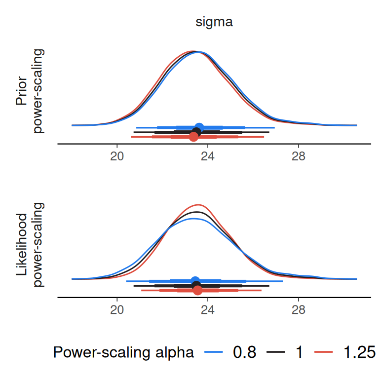
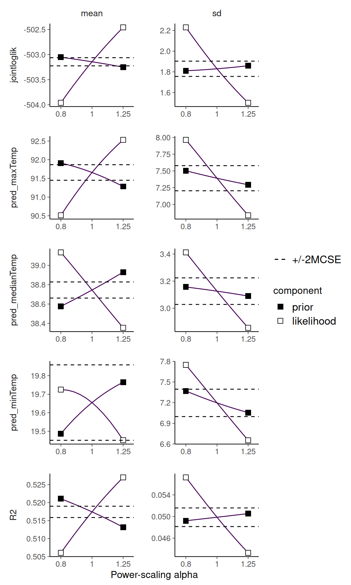

Selecting priors to power-scale and posterior quantities to check
Source:vignettes/selecting_priors_and_quantities.qmd
Introduction
Priorsense is a package for prior and likelihood sensitivity checks. It can be used to detect prior-data conflict and weak likelihood.
This vignette demonstrates two different but related concepts: (1) selecting different priors to power-scale, and (2) specifying which posterior quantities to check the sensitivity of.
We will fit two different models on the same data set. The first is a linear model, which has easily interpretable parameters.
The second model includes splines and the spline coefficient parameters are not as easy to interpret. The specific model is not important, as the general principles apply for any model that has many parameters, correlated parameters or uninterpretable parameters. This includes other models with smooths, non-linear models, Gaussian processes and other more complex models.
The features used here require brms version 2.22.11 or greater.
The main takeaways for this vignette are:
prior tagging makes it possible to partition priors to make selective power-scaling easier
in more complex models, it is often better to check the sensitivity of predictions or predictive measures rather than the parameters
We use the airquality data set, and fit a model predicting the amount of ozone based on the temperature.
Linear model
We first fit a linear model, with some priors specified. For each of the specified priors we add a tag, which will be used later to select which priors are power-scaled.
fit_lin <- brm(
formula = bf(Ozone ~ Temp),
data = aq,
family = gaussian(),
prior = c(
prior(normal(0, 5), class = "b", coef = "Temp", tag = "b"),
prior(normal(0, 10), class = "sigma", tag = "sigma"),
prior(normal(0, 100), class = "Intercept", tag = "intercept")
),
seed = 123,
refresh = 0,
silent = 2
)Rather than working with the brmsfit object directly, we will first extract the posterior draws. We will work with draws object using the posterior package so derived quantities can be added more easily. The brmsfit does not include the log_lik evaluations, so we will add those to the draws object using posterior::bind_draws
post_draws_lin <- as_draws_df(fit_lin) |>
bind_draws(log_lik_draws(fit_lin))As the model is simple, with only one predictor, and each parameter is directly interpretable, we can perform the power-scaling sensitivity check directly on all the marginal posteriors of the parameters.
powerscale_sensitivity(
post_draws_lin
)Sensitivity based on cjs_dist
Prior selection: all priors
Likelihood selection: all data
variable prior likelihood diagnosis
b_Intercept 0.006 0.091 -
b_Temp 0.006 0.093 -
sigma 0.062 0.083 potential prior-data conflict
Intercept 0.005 0.077 -This indicates that when we power-scale all the priors, the posterior of sigma is changing.
Instead of looking at the parameter posteriors, we can check the sensitivity of predictions and predictive performance measures.
For predictions, we will focus on the predictions at the minimum, median and maximum temperatures from the data.
For predictive performance measures, we will use the in-sample Bayesian R2 and log-score.
We first define a log-score function.
And then bind the draws of the predictions and measures to the posterior draws using posterior::bind_draws(). For this we will use the predictions_as_draws helper function provided by priorsense which transforms predictions from brms to draws objects.
post_draws_lin <- post_draws_lin |>
bind_draws(
predictions_as_draws(
x = fit_lin,
predict_fn = bayes_R2,
prediction_names = "R2",
summary = FALSE
)
) |>
bind_draws(
predictions_as_draws(
x = fit_lin,
predict_fn = logscore,
prediction_names = "logscore"
)
) |>
bind_draws(
predictions_as_draws(
x = fit_lin,
predict_fn = posterior_epred,
prediction_names = c("pred_minTemp", "pred_medianTemp", "pred_maxTemp"),
newdata = data.frame(Temp = c(min(aq$Temp), median(aq$Temp), max(aq$Temp)))
)
)
powerscale_sensitivity(
post_draws_lin
)Sensitivity based on cjs_dist
Prior selection: all priors
Likelihood selection: all data
variable prior likelihood diagnosis
b_Intercept 0.006 0.091 -
b_Temp 0.006 0.093 -
sigma 0.062 0.083 potential prior-data conflict
Intercept 0.005 0.077 -
R2 0.005 0.120 -
logscore 0.009 0.430 -
pred_minTemp 0.006 0.088 -
pred_medianTemp 0.006 0.076 -
pred_maxTemp 0.007 0.090 -In this case, these predictive metrics do not appear to be sensitive to power-scaling the prior. If we are focused on prediction, we might not be concerned about the potential prior-data conflict for the sigma parameter. However, as the model is simple and sigma is interpretable we can continue investigation.
We can confirm that it is the sigma prior that is causing the possible prior-data conflict, by using the prior_selection argument and specifying the tag we defined when creating the priors.
powerscale_sensitivity(
post_draws_lin,
prior_selection = c("sigma", "intercept")
)Sensitivity based on cjs_dist
Prior selection: sigma, intercept
Likelihood selection: all data
variable prior likelihood diagnosis
b_Intercept 0.004 0.091 -
b_Temp 0.004 0.093 -
sigma 0.062 0.083 potential prior-data conflict
Intercept 0.005 0.077 -
R2 0.006 0.120 -
logscore 0.009 0.430 -
pred_minTemp 0.004 0.088 -
pred_medianTemp 0.006 0.076 -
pred_maxTemp 0.004 0.090 -And we can visualise the conflict.
powerscale_plot_dens(
post_draws_lin,
variable = "sigma",
prior_selection = "sigma"
)
Here we can see that there is a tendency for the posterior of sigma to shift closer to zero when the prior is strengthened (power-scaling alpha > 1). In this case, we did not have strong prior information that informed the prior, so we can consider a wider prior for sigma.
Spline model
Next we extend our model by adding splines (and use a wider prior on sigma). This model is more complex, so it is more important to focus on checking the sensitivity of specific posterior quantities, rather than all the parameters. Here we will focus on the Bayesian R2, the log-score and the predictions at the minimum, median and maximum of the observed temperature.
fit_spline <- brm(
formula = bf(Ozone ~ s(Temp)),
data = aq,
family = gaussian(),
prior = c(
prior(normal(0, 5), class = "b", coef = "sTemp_1", tag = "b"),
prior(normal(0, 10), class = "sds", coef = "s(Temp)", tag = "sds"),
prior(normal(0, 30), class = "sigma", tag = "sigma"),
prior(normal(0, 100), class = "Intercept", tag = "intercept")
),
seed = 123,
refresh = 0,
silent = 2
)
post_draws_spline <- as_draws_df(fit_spline) |>
bind_draws(log_lik_draws(fit_spline)) |>
bind_draws(
predictions_as_draws(
x = fit_spline,
predict_fn = bayes_R2,
prediction_names = "R2", summary = FALSE)
) |>
bind_draws(
predictions_as_draws(
x = fit_spline,
predict_fn = logscore,
prediction_names = "logscore")
) |>
bind_draws(
predictions_as_draws(
x = fit_spline,
predict_fn = posterior_epred,
prediction_names = c("pred_minTemp", "pred_medianTemp", "pred_maxTemp"),
newdata = data.frame(Temp = c(min(aq$Temp), median(aq$Temp), max(aq$Temp)))
)
)We start with power-scaling all priors, but only looking at the effect on R2 and logscore and the predictions.
powerscale_sensitivity(
post_draws_spline,
variable = c("R2", "logscore", "pred_minTemp", "pred_medianTemp", "pred_maxTemp")
)Sensitivity based on cjs_dist
Prior selection: all priors
Likelihood selection: all data
variable prior likelihood diagnosis
R2 0.061 0.242 potential prior-data conflict
logscore 0.043 0.422 -
pred_minTemp 0.030 0.062 -
pred_medianTemp 0.044 0.124 -
pred_maxTemp 0.037 0.130 -We see sensitivity in both measures. Next, we selectively power-scale different priors by specifying the corresponding tag in prior_selection.
As this model introduced a prior on the sds term, we can start there.
powerscale_sensitivity(
post_draws_spline,
variable = c("R2", "logscore", "pred_minTemp", "pred_medianTemp", "pred_maxTemp"),
prior_selection = "sds"
)Sensitivity based on cjs_dist
Prior selection: sds
Likelihood selection: all data
variable prior likelihood diagnosis
R2 0.066 0.242 potential prior-data conflict
logscore 0.048 0.422 -
pred_minTemp 0.029 0.062 -
pred_medianTemp 0.044 0.124 -
pred_maxTemp 0.037 0.130 -There is clear sensitivity to this prior. We can check all the other priors at once by providing a vector as the prior_selection argument.
powerscale_sensitivity(
post_draws_spline,
variable = c("R2", "logscore", "pred_minTemp", "pred_minTemp", "pred_maxTemp"),
prior_selection = c("intercept", "sigma", "b")
)Sensitivity based on cjs_dist
Prior selection: intercept, sigma, b
Likelihood selection: all data
variable prior likelihood diagnosis
R2 0.007 0.242 -
logscore 0.008 0.422 -
pred_minTemp 0.003 0.062 -
pred_maxTemp 0.003 0.130 -We can visualise the effect of power-scaling the sds prior on the posterior R2, logscore and the predictions. Here we visualise the change in posterior mean and standard deviation.
powerscale_plot_quantities(
post_draws_spline,
div_measure = NULL,
variable = c("R2", "logscore", "pred_minTemp", "pred_medianTemp", "pred_maxTemp"),
prior_selection = "sds"
)
Although not extremely sensitive, there is a tendency for the in-sample predictive performance measures to decrease as the prior is strengthened. This is natural when strengthening the prior leads to less flexibility in the model. In this case larger sds implies more flexibility in the spline component of the model. If this is not what we are intending with the choice of prior on sds, we may want to rethink and change it.